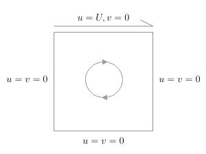
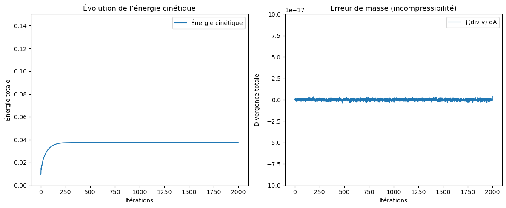
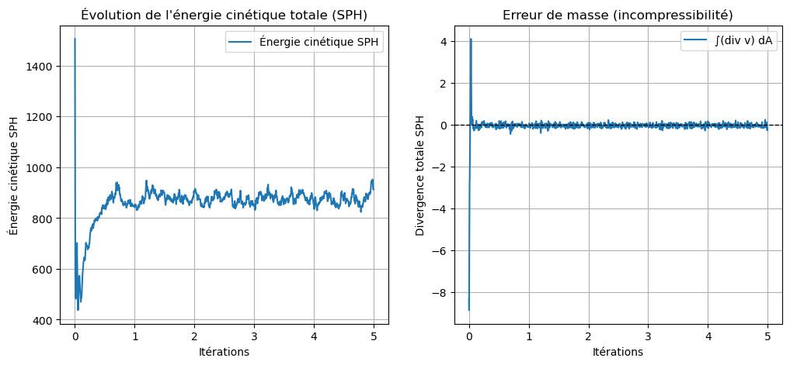
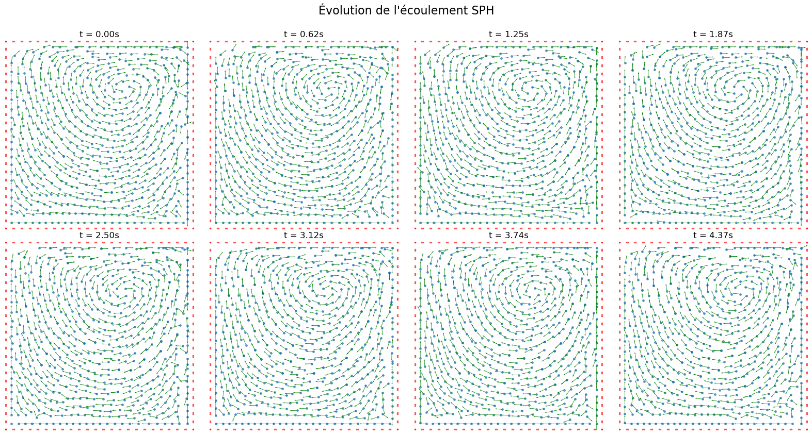
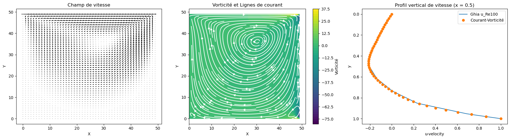
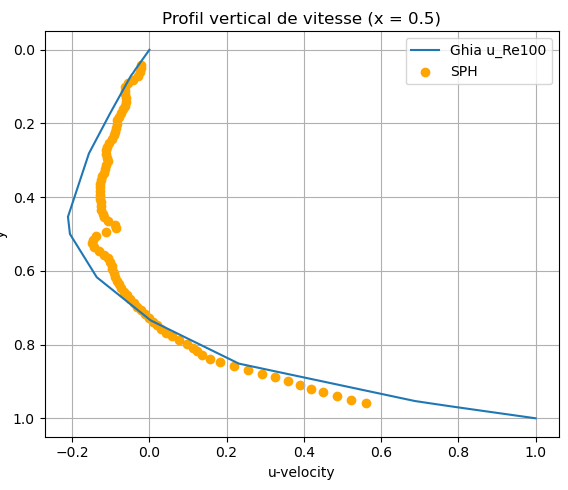
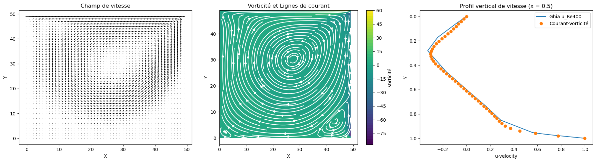
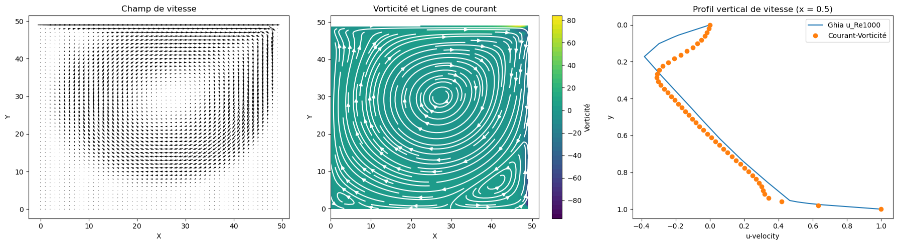

Two Views of Fluid Motion
Streamfunction–Vorticity and Smoothed Particle Hydrodynamics in a Lid-Driven Cavity
A moving wall inside a square cavity generates a remarkably challenging flow: strong near-wall gradients, a central vortex, and smaller corner eddies. I used this classical CFD benchmark to derive and compare an Eulerian finite-difference solver with a mesh-free Lagrangian particle method.
1. The Lid-Driven Cavity Benchmark
A square cavity filled with viscous fluid may seem like a simple numerical problem: all four boundaries are solid, and the upper wall moves horizontally at a constant velocity. Yet this configuration creates a rich recirculating flow. The moving lid transfers momentum into the cavity, driving a primary vortex and, as viscosity decreases, smaller secondary eddies near the corners.
The lid-driven cavity is a standard computational-fluid-dynamics benchmark precisely because the geometry is simple but the flow stresses the treatment of wall boundaries, velocity gradients, and numerical resolution. My objective was to solve it using two markedly different formulations:
- An Eulerian streamfunction–vorticity solver, which evolves fields on a stationary two-dimensional grid.
- A Lagrangian Smoothed Particle Hydrodynamics (SPH) solver, in which fluid is represented by interacting particles moving through the domain.
The key question is not whether both methods produce a swirling pattern. It is how accurately they reproduce the same flow and where their numerical assumptions start to matter.

For cavity length \(L\), kinematic viscosity \(\nu\), and lid speed \(U_{\mathrm{lid}}\), the dimensionless Reynolds number is
It measures the relative importance of inertial and viscous effects. In this experiment, I first compared both solvers at \(Re=100\), then used the grid solver to examine the development of more complex vortices at \(Re=400\) and \(Re=1000\).
2. From Navier–Stokes to Two Numerical Viewpoints
For an incompressible Newtonian fluid with constant density, the governing equations are
and
Here \(\mathbf{u}=(u,v)\) is the velocity field, \(p\) the pressure, \(\rho\) the density, and \(\nu\) the kinematic viscosity. The nonlinear advection term, pressure gradient, and viscous diffusion all contribute to the motion.
The two algorithms differ in what is discretized.
In the Eulerian description, the computational locations remain fixed while velocity and vorticity change over time. In the Lagrangian description, positions move with the fluid, so the material derivative
naturally combines local acceleration and convection. This difference is the organizing principle for the two implementations below.
3. Solver I — Streamfunction and Vorticity on a Grid
3.1 Eliminating pressure in two dimensions
Rather than advancing pressure and both velocity components independently, the grid solver uses a streamfunction \(\psi(x,y,t)\), defined by
This choice enforces the incompressibility constraint directly:
assuming the usual smoothness conditions for equality of mixed derivatives.
The out-of-plane vorticity is
Substituting the streamfunction derivatives gives
so the streamfunction is recovered by solving a Poisson equation:
To derive the second equation, take the curl of the momentum equation. The pressure term disappears because \(\nabla\times\nabla p=0\) when density is constant. The remaining equation evolves vorticity by convection and diffusion:
We have thus replaced the original pressure–velocity system with a coupled pair: transport vorticity, solve a Poisson equation for \(\psi\), and reconstruct the velocity field.
3.2 Finite-difference discretization
On a uniform grid of spacing \(h\), the five-point Laplacian is
Inserting \(\nabla^2\psi=-\omega\) and isolating the center value yields the Poisson update
The implementation uses Gauss–Seidel iteration with successive over-relaxation (SOR):
The velocity is reconstructed with centered derivatives,
and the vorticity transport is approximated using centered spatial differences. The conceptual forward-time update is
Implementation note: the actual source applies its relaxation factor within the in-place vorticity update; this differs from a strict simultaneous forward-Euler transport step. That detail matters when interpreting its stability and reproducibility.
# In the notebook: array u represents the streamfunction ψ,
# array w represents vorticity ω.
residual = 0.25 * (
w[i,j] * h**2
+ u[i+1,j] + u[i-1,j]
+ u[i,j+1] + u[i,j-1]
) - u_prev[i,j]
u[i,j] += omega * residual3.3 Wall conditions and solver loop
The no-slip velocity conditions are
Because the walls are impermeable, the streamfunction can be fixed to the same constant on the cavity boundary. Wall vorticity must then be estimated consistently with the tangential velocity. For example, the moving-lid condition used in the report is
The repeated numerical process is straightforward:
- Relax \(\psi\) to approximately satisfy its Poisson equation.
- Reconstruct the velocity from \(\psi\).
- Advance the interior vorticity using convection and diffusion.
- Apply the wall-vorticity conditions and repeat.
The baseline experiment used \(50\times50\) grid nodes, \(U_{\mathrm{lid}}=1\), \(\Delta t=0.01\), and 2,000 time steps. The notebook uses \(h=1/N\); for a boundary-inclusive set of 50 grid nodes, the geometric spacing would instead be \(1/(N-1)\). That discrepancy is retained here as an implementation limitation.
4. Validating the Grid Solver
4.1 Energy balance
A useful diagnostic comes from multiplying Navier–Stokes by the velocity and integrating over the cavity. With energy per unit density defined as
an integration by parts separates transport through the boundary, viscous dissipation within the fluid, and viscous work supplied by the lid. Since the wall-normal velocity is zero everywhere and stationary walls do no mechanical work, the balance reduces to
The first term removes kinetic energy through viscosity. The second injects energy through the moving boundary. At steady state, the two contributions balance.
The numerical code evaluates
The original energy plot approaches a plateau near \(E_h\approx0.038\) after the initial transient, consistent with a flow approaching a stationary regime.
4.2 Incompressibility check
The divergence theorem gives
for a cavity with no normal flow through its walls. The recorded signed discrete divergence integral fluctuates close to numerical roundoff, of order \(10^{-17}\).

An important distinction is that the integral of divergence can vanish even when nonzero local divergence errors cancel. The result is a useful consistency check, but pointwise or RMS divergence is a stronger diagnostic. In addition, the streamfunction formulation already makes the velocity field discretely divergence-free in the compatible interior stencil.
5. Solver II — Smoothed Particle Hydrodynamics
The grid solution advances flow quantities at fixed locations. SPH instead follows discrete fluid particles that carry mass, position, velocity, density, and pressure. Local field quantities are estimated by weighted sums over those particles.
5.1 From the Dirac delta to a smoothing kernel
Begin with the identity
Replace the Dirac delta with a normalized smoothing kernel \(W(\mathbf{r}-\mathbf{r}',h)\), which approaches the delta distribution as the smoothing length \(h\) tends to zero. Approximate the remaining integral by particle volumes \(m_j/\rho_j\):
Spatial derivatives can be estimated by differentiating the kernel:
For the two-dimensional Gaussian used in the source,
Its gradient and Laplacian follow analytically:
@numba.njit
def W_2D(dx, dy, h):
r2 = dx**2 + dy**2
return np.exp(-r2 / h**2) / (np.pi * h**2)
@numba.njit
def gradW_2D(dx, dy, h):
r2 = dx**2 + dy**2
factor = -2.0 * np.exp(-r2 / h**2) / (np.pi * h**4)
return factor * dx, factor * dy5.2 Particle pressure and viscosity
Following a fluid particle, the material form of momentum conservation is
To obtain reciprocal pairwise pressure interactions, the notebook uses a symmetric form:
The viscous contribution depends on velocity differences between interacting particles:
Together,
Density is determined by a kernel-weighted mass sum,
and converted to pressure through a Tait-type equation of state,
The implementation also clamps negative pressure to zero, a numerical choice absent from the idealized equation above. This is a weakly-compressible pressure closure, not an exact algebraic incompressibility constraint.
5.3 Integration and boundaries
Once the acceleration is known, particle positions are advanced with a position-Verlet update,
The code estimates velocity from successive positions using
Boundary conditions are less direct for mobile particles. The experiment places ghost particles along all four walls. Their assigned velocities represent stationary walls or the moving lid, and they participate in the particle density and force sums. The code additionally clamps fluid positions within the cavity to prevent escape.
This is a practical first treatment, but it does not enforce no-slip with the same precision as specifying velocities on a fixed grid. The code calculates interactions against all fluid and ghost particles rather than using a spatial neighbor search, implying quadratic pairwise work as particle count grows.
For \(Re=100\), the source sets \(U_{\mathrm{lid}}=10\), \(\nu=0.1\), \(h=0.04\), \(\rho_0=500\), \(B=1000\), \(\gamma=7\), and \(\Delta t=0.002\). Although the parameter N is set to 600, square-lattice construction actually produces \(24\times24=576\) fluid particles.
a = getAcc(pos, pos_old, ghost_pos, ghost_vel,
m, h, rho0, B, gamma, nu, dt)
pos_new = pos + (pos - pos_old) + a * dt**2
pos_new = enforce_boundaries(pos_new)
pos_old = pos.copy()
pos = pos_new.copy()6. SPH Validation: Startup, Energy, and Particle Motion
The SPH energy diagnostic takes the natural particle form
The early part of the simulation exhibits a substantial energy transient as boundary-induced viscous motion and the initially non-equilibrated pressure field redistribute momentum. The trajectory then approaches an oscillating plateau, unlike the smoother grid-based result. This is consistent with the source's observations but does not, by itself, establish the accuracy of a steady-state SPH solution.
The SPH divergence is estimated using relative velocity differences:
The numerical experiment integrates it approximately as
As with the grid diagnostic, a small signed integral can hide strong local errors. A better later test would show both the distribution of particle densities and RMS local divergence.

The particle snapshots offer a more intuitive view of the dynamics: the moving lid organizes the initial particle motion into a sustained recirculating flow.

Companion experiment: interactive 2D SPH
The repository also contains InteractiveSPH_2DSim.py, a separate real-time Pygame sandbox. It starts with 200 particles and a paintable 20 × 20 obstacle grid. Unlike the cavity benchmark, the interactive prototype includes gravity, collisions and a leapfrog update; its viscosity is implemented as velocity damping rather than the notebook's kernel-Laplacian term. It is therefore an exploratory companion, not a second run of the published cavity benchmark.
1 enables a middle-click impulse, while 2 enables adding a particle.7. Comparing Against Ghia et al. (1982)
7.1 The baseline at Re = 100
A direct comparison is possible using the horizontal velocity \(u\) along the vertical centerline \(x=L/2\). Ghia et al.'s reference table provides sampled velocities at known heights, which I compared against the numerical centerline profiles.

The grid simulation clearly reproduces a large, stable primary recirculation cell. Its reported velocity error is 2.73% on the selected high-magnitude reference samples.

At \(Re=100\), SPH produces qualitatively recognizable recirculation, but its velocity profile departs more noticeably from the benchmark, particularly approaching the moving wall. The reported masked error is 23.9665%.
7.2 Reading the error metric correctly
I used a pointwise relative error
then averages over a filtered subset to avoid values where the reference velocity is close to zero:
At \(Re=100\), both methods use \(|u_{\mathrm{Ghia}}|>0.7\). With the 17 values present in the source table, only four near-lid points satisfy that criterion. The numbers therefore describe a selected high-speed part of the profile, not average error along the whole centerline.
| Method | \(Re\) | Reported masked error | Reference filter | Selected Ghia points |
|---|---|---|---|---|
| Grid \(\psi-\omega\) | 100 | 2.73% | \(|u_{\mathrm{Ghia}}|>0.7\) | 4/17 |
| SPH | 100 | 23.9665% | \(|u_{\mathrm{Ghia}}|>0.7\) | 4/17 |
| Grid \(\psi-\omega\) | 400 | 5.36% | \(|u_{\mathrm{Ghia}}|>0.5\) | 5/17 |
| Grid \(\psi-\omega\) | 1000 | 12.36% | \(|u_{\mathrm{Ghia}}|>0.5\) | 4/17 |
The matched \(Re=100\) masks still establish a useful contrast between these specific implementations. For stronger future quantitative comparisons, it would be preferable to report an additional normalized whole-profile \(L_2\) error using a consistent sampling and normalization procedure.
7.3 Higher Reynolds numbers: grid solver only
As \(Re\) increases from 100 to 400 and then 1000, viscous effects are less dominant relative to inertia, and the flow develops sharper gradients and secondary corner vortices. These structures increasingly challenge the 50×50 mesh.


The reported masked reference error rises to 5.36% at \(Re=400\) and 12.36% at \(Re=1000\). Since the reference-value mask is different from the one used at \(Re=100\), these percentages are not a fully uniform convergence study. Nonetheless, the plots and reported values motivate the expected numerical limitations: thin boundary layers and small corner vortices demand increased spatial resolution and more careful time integration.
The notebook tested SPH only at \(Re=100\). Any statement about its performance at 400 or 1000 must remain a proposal or prediction for future experiments, not an observed result.
np.gradient, but assigns the returned derivative axes in reverse order. The velocity profile above is retained; the SPH vorticity color map is omitted pending a corrected run. Here is the indexing needed to compute \(\omega_z=\partial_x v-\partial_y u\):# Axis 0 is y; axis 1 is x (NumPy image-grid convention).
dv_dy, dv_dx = np.gradient(VI, dy_grid, dx_grid)
du_dy, du_dx = np.gradient(UI, dy_grid, dx_grid)
vorticity = dv_dx - du_dy8. What These Experiments Revealed
The most revealing difference between the two solvers is not simply that one uses a grid and the other uses particles. It is how their representations change the meaning of differentiation, boundary conditions, numerical stability, and computational cost.
The streamfunction–vorticity method is especially convenient for a two-dimensional incompressible cavity. The divergence-free condition is encoded by construction, the walls are represented directly on the grid, and the resulting velocity profile can be compared against established benchmark values. Its accuracy nevertheless declines when finer flow structures must be represented on a relatively coarse mesh.
The SPH method replaces fixed-grid differentiation with kernel-weighted particle interactions. That grants a flexible Lagrangian description of motion but introduces sensitivity to kernel resolution, particle distribution, artificial compressibility, and wall modelling. In this first implementation, those limitations appear as a less accurate centerline profile and a more oscillatory energy history. The brute-force pairwise implementation also makes scaling expensive without a neighbor-search acceleration structure.
The practical next steps would be to reconcile the grid spacing, validate the vorticity reconstruction, use stronger local incompressibility diagnostics, improve ghost-boundary treatment, and rerun controlled comparisons under consistent error metrics. The original experiment already establishes a clear computational lesson: two discretizations of the same governing equations can reproduce the same qualitative flow while delivering substantially different quantitative accuracy.